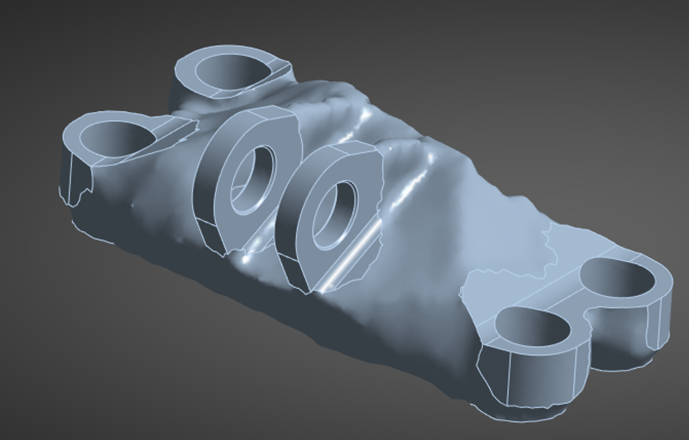
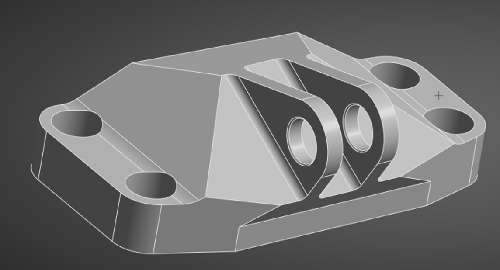
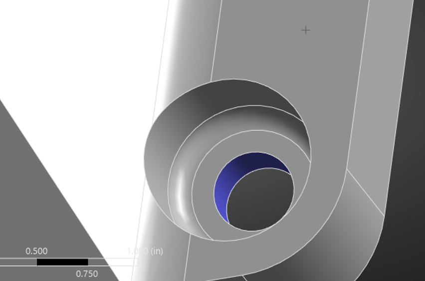
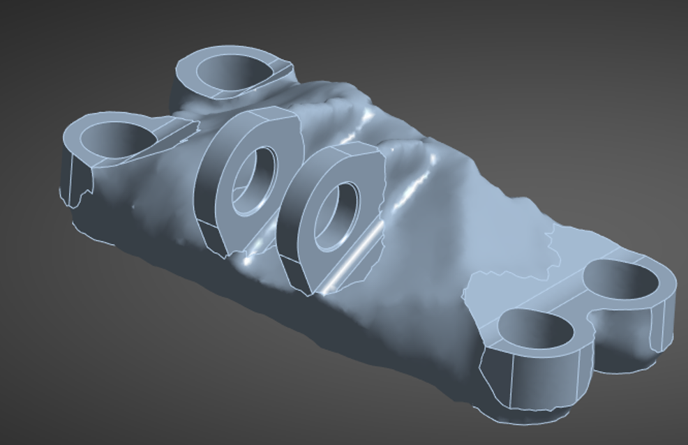
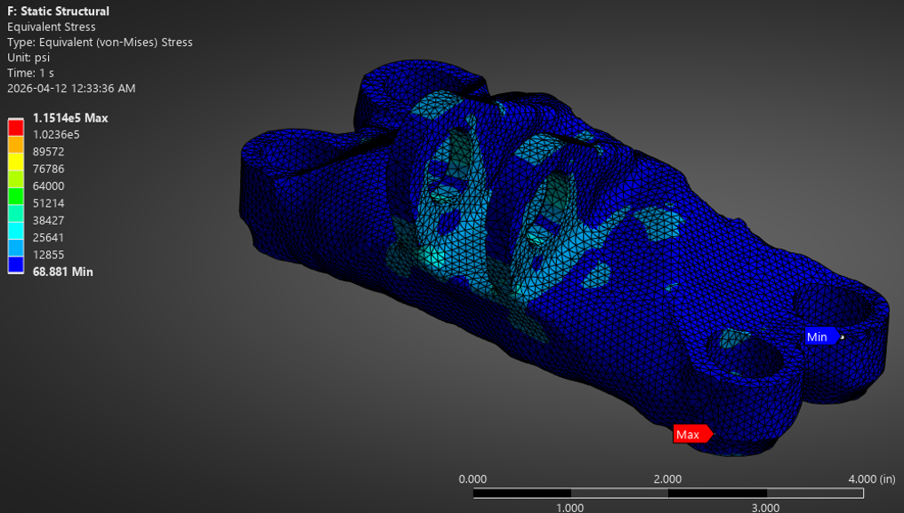

Aircraft Engine Loading Bracket Topology Optimization
Overview
I performed structural analysis and topology optimization on an aircraft engine loading bracket designed for Fused Deposition Modeling (FDM) manufacturing. The primary objective was to cut the component's weight by 50% without compromising its structural integrity. Using ANSYS Workbench, I evaluated the bracket under four distinct flight and operational load cases, eventually generating a highly optimized, organic geometry that safely handles extreme forces.
Key Design Highlights
- Rigorous Load Testing: Evaluated the bracket against four independent static load cases (Vertical, Horizontal, Angled, and Torsional) with forces up to 9,500 lbs and moments up to 5,000 lb-in applied directly to the pin geometry.
- Iterative Optimization Weighting: Discovered that the vertical load case generated significantly higher maximum stress (99.9 ksi). To prevent yielding in the final design, I iteratively increased this load case's solver weight by a factor of 5 during the optimization process.
- Massive Weight Reduction: Successfully exceeded the project target by achieving a 51.1% mass reduction, dropping the bracket's weight from 4.52 lbs down to just 2.31 lbs.
- Structural Validation: Re-simulated the smoothed, optimized geometry against all original load cases to confirm it would not yield. I determined that the lowest factor of safety was 1.14, noting that future iterations for real-world aerospace applications would target a minimum 1.5 FOS to account for dynamic loading and FDM material anisotropy.
Load Case Validation (Optimized Geometry)
Case 1: Vertical
Load: 8,000 lbs (Up)
Max Stress: 115.0 ksi
Factor of Safety: 1.14
Case 2: Horizontal
Load: 8,500 lbs (Right)
Max Stress: 69.8 ksi
Factor of Safety: 1.88
Case 3: Angled
Load: 9,500 lbs (@ 42°)
Max Stress: 70.0 ksi
Factor of Safety: 1.87
Case 4: Torsional
Load: 5,000 lb-in (CW)
Max Stress: 52.7 ksi
Factor of Safety: 2.48
Technical Specifications
| Software | ANSYS Workbench |
|---|---|
| Manufacturing Constraint | Fused Deposition Modeling (FDM) |
| Original Mass | 4.52 lbs (28.27 in³) |
| Optimized Mass | 2.31 lbs (14.44 in³) |
| Total Weight Reduction | 51.1% |
Gallery



